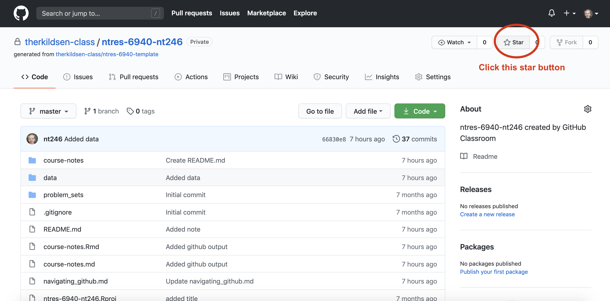
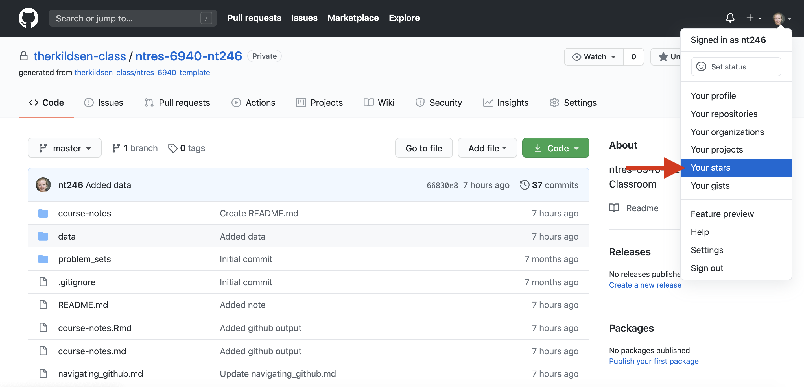
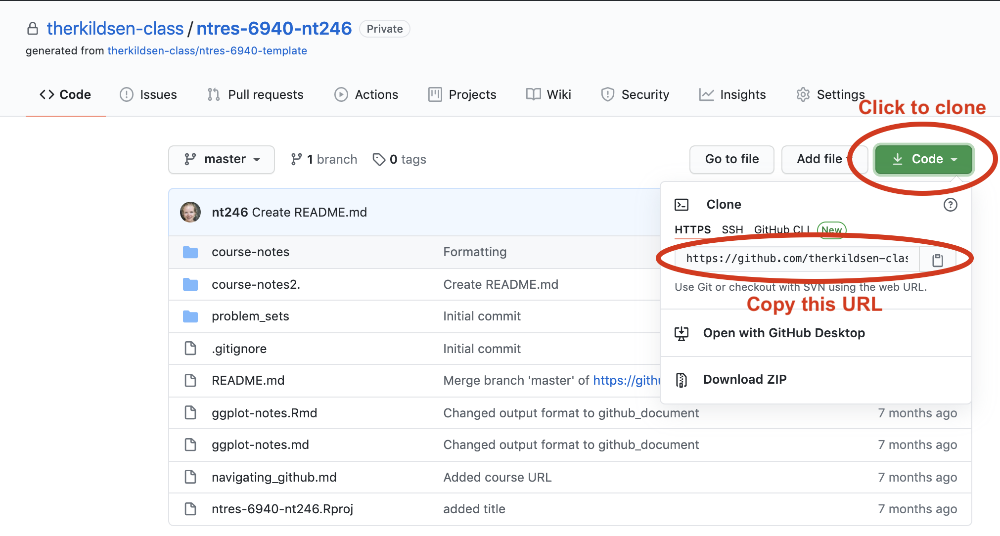

Lesson 3: Version control and the Git/GitHub workflow
Readings
Other resources:
GitHub Guides has a number of tutorials. “Hello World” is a good place to start
Happy Git with R by Jenny Bryan
GitHub for Project Management by Openscapes
Learning objectives
By the end of this class you will be able to:
- Locate your personal GitHub repo through which you’ll be submitting homework and exercises for this course
- Create and edit plain text files on GitHub
- Navigate the commit history of a repository and a file on GitHub
- Clone a repo locally using RStudio
- Sync local changes to a file back to remote (and GitHub) with pull, stage, commit, push
- Describe the advantages of a project-oriented workflow in RStudio and set up a version-controlled project directory on your computer
Acknowledgements: Today’s lecture is adapted from the excellent R for Excel users course by Julia Stewart Lowndes and Allison Horst and the STAT457 course at UBC.
Introduction to Git and GitHub
Why should R users use Github?
Modern R users use GitHub because it helps make coding collaborative and social while also providing huge benefits to organization, archiving, and being able to find your files easily when you need them.
One of the most compelling reasons for me is that it ends (or nearly ends) the horror of keeping track of versions.
Basically, we get away from this:

This is a nightmare not only because I have NO idea which is truly the version we used in that analysis we need to update, but because it is going to take a lot of detective work to see what actually changed between each file. Also, it is very sad to think about the amount of time everyone involved is spending on bookkeeping: is everyone downloading an attachment, dragging it to wherever they organize this on their own computers, and then renaming everything? Hours and hours of all of our lives.
But then there is GitHub.
In GitHub, in this example you will likely only see a single file, which is the most recent version. GitHub’s job is to track who made any changes and when (so no need to save a copy with your name or date at the end), and it also requires that you write something human-readable that will be a breadcrumb for you in the future. It is also designed to be easy to compare versions, and you can easily revert to previous versions.
GitHub also supercharges you as a collaborator. First and foremost with Future You, but also sets you up to collaborate with Future Us!
GitHub, especially in combination with RStudio, is also game-changing for publishing and distributing. You can — and we will — publish and share files openly on the internet.
What is GitHub? And Git?
OK so what is GitHub? And Git?
Git is a program that you install on your computer: it is version control software that tracks changes to your files over time.
Github is an website that is essentially a social media platform for your git-versioned files. GitHub stores all your versioned files as an archive, but also as allows you to interact with other people’s files and has management tools for the social side of software projects. It has many nice features to be able visualize differences between images, rendering & diffing map data files, render text data files, and track changes in text.
GitHub was developed for software development, so much of the functionality and terminology that is exciting for professional programmers (e.g., branches and pull requests) isn’t necessarily the right place for us as new R users to get started. We’ll get there soon, but for now, we will be learning and practicing GitHub’s features and terminology on a “need to know basis” as we start managing our projects with GitHub.
Account types
GitHub allows for cloud storage, like Google Drive and Dropbox do. But there’s a bit more structure than just storing files under your account:
- Repositories (aka “repos”): All files must be organized into repositories. Think of these as self-contained projects. These can either be public or private.
User Accounts vs. Organization Accounts (aka “Org”): All repositories belong to an account:
- A user account is the account you just made, and typically holds repositories related to your own work.
- An Organization account can be owned by multiple people, and typically holds repositories relevant to a group (like
therkildsen-class).
Examples:
- The ggplot2 repo, within its corresponding
tidyverse Org - Our class website within Nina’s user account
nt246
Reconnecting with your course repo on GitHub
As we discussed at the end of last class, we have created a GitHub Classroom organization for the class. You should all have accessed your personal course repo through which you will be submitting your assignments and communicating with us. If not, click here and select your name from the list (or just click continue if you don’t see your name there).
Once you land on your repo page, notice that it is hosted within our course organizational account therkildsen-class, not your personal account (see the path in the top left corner). To make this repo also show up on your personal account page, click the “Star” button on the top right of the page.

Now if you click on the profile information in the very top right corner, and select the “Your stars” option, you’ll be taken to a list of all the repos you have starred and your course repo should show up here (it should be named something like therkildsen-class/ntres-6940-YOUR_USER_NAME). Click on the repo name to return to your course repo.

Interfacing with GitHub from our local computers using RStudio
We should all have set up git on our local computers by now and have it connected to RStudio. If you don’t, follow the instructions here
Clone your repository using RStudio
Let’s recap on the setup we rushed through at the end of last class. We have all identified our course repo on GitHub, i.e. in the cloud. Now, let’s get it established locally on our computers: that is called “cloning”.
Let’s clone this repo to our local computer using RStudio. Unlike downloading, cloning keeps all the version control and user information bundled with the files.
Copy the repo address
First, click the green “Code” button, then copy the web address of the repository you want to clone. We will use HTTPS.
Aside: HTTPS is default, but you could alternatively set up with SSH. This is more advanced than we will get into here, but allows 2-factor authentication. See Happy Git with R for more information.

RStudio: New Project
Now go back to RStudio, and click on New Project. There are a few different ways; you could also go to File > New Project…, or click the little green + with the R box in the top left. also in the File menu).

Select Version Control

Select Git
Since we are using git.

Paste the repo address
Paste the repo address (which is still in your clipboard) into in the “Repository URL” field. The “Project directory name” should autofill; if it does not press tab, or type it in. It is best practice to keep the “Project directory name” THE SAME as the repository name.
When cloned, this repository is going to become a folder on your computer.
At this point you can save this repo anywhere. There are different schools of thought but we think it is useful to create a high-level folder where you will keep your github repos to keep them organized. We call ours github and keep it in our root folder (~/github), and so that is what we will demonstrate here — you are welcome to do the same. Press “Browse…” to navigate to a folder and you have the option of creating a new folder. Make sure to not place it in folder tracked by a cloud storage service (e.g. DropBox, Google Drive or Box).
Finally, click Create Project.

Admire and inspect your local repo
If everything went well, the repository will show up in RStudio!

The repository is also saved to the location you specified, and you can navigate to it as you normally would in Finder or Windows Explorer:

Hooray!
Let’s notice a few things:
First, our working directory is set to ~/github/r-workshop, and r-workshop is also named in the top right hand corner.
Second, we have a Git tab in the top right pane! Let’s click on it.

Our Git tab has 2 items:
- .gitignore file
- .Rproj file
These have been added to our repo by RStudio — we can also see them in the File pane in the bottom right of RStudio. These are helper files that RStudio has added to streamline our workflow with GitHub and R. We will talk about these a bit more soon. One thing to note about these files is that they begin with a period (.) which means they are hidden files: they show up in the Files pane of RStudio but won’t show up in your Finder or Windows Explorer.
Going back to the Git tab, both these files have little yellow icons with question marks ?. This is GitHub’s way of saying: “I am responsible for tracking everything that happens in this repo, but I’m not sure what is going on with these files yet. Do you want me to track them too?”
We will handle this in a moment; first let’s look at the README.md file.
Edit your README file
Let’s also open up the README.md. This is a Markdown file, which is the same language we just learned with R Markdown. It’s like an R Markdown file without the abilities to run R code.
We will edit the file and illustrate how GitHub tracks files that have been modified (to complement seeing how it tracks files that have been added.
README files are common in programming; they are the first place that someone will look to see why code exists and how to run it.
In my README, I’ll write:
This repo is for my coursework for NTRES 6940. When I save this, notice how it shows up in my Git tab. It has a blue “M”: GitHub is already tracking this file, and tracking it line-by-line, so it knows that something is different: it’s Modified with an M.
Great. Now let’s sync back to GitHub in 4 steps.
Sync from RStudio (local) to GitHub (remote)
Syncing to GitHub.com means 4 steps:
- Pull
- Stage
- Commit
- Push

We start off this whole process by clicking on the Commit section.

Pull
We start off by “Pulling” from the remote repository (GitHub.com) to make sure that our local copy has the most up-to-date information that is available online. Right now, since we just created the repo and are the only ones that have permission to work on it, we can be pretty confident that there isn’t new information available. But we pull anyways because this is a very safe habit to get into for when you start collaborating with yourself across computers or others. Best practice is to pull often: it costs nothing (other than an internet connection).
Pull by clicking the teal Down Arrow. (Notice also how when you highlight a filename, a preview of the differences displays below).

Stage
Let’s click the boxes next to each file. This is called “staging a file”: you are indicating that you want GitHub to track this file, and that you will be syncing it shortly. Notice:
- .Rproj and .gitignore files: the question marks turn into an A because these are new files that have been added to your repo (automatically by RStudio, not by you).
- README.md file: the M indicates that this was modified (by you)
These are the codes used to describe how the files are changed, (from the RStudio cheatsheet):

Commit
Committing is different from saving our files (which we still have to do! RStudio will indicate a file is unsaved with red text and an asterix). We commit a single file or a group of files when we are ready to save a snapshot in time of the progress we’ve made. Maybe this is after a big part of the analysis was done, or when you’re done working for the day.
Committing our files is a 2-step process.
First, you write a “commit message”, which is a human-readable note about what has changed that will accompany GitHub’s non-human-readable alphanumeric code to track our files. I think of commit messages like breadcrumbs to my Future Self: how can I use this space to be useful for me if I’m trying to retrace my steps (and perhaps in a panic?).
Second, you press Commit.

When we have committed successfully, we get a rather unsuccessful-looking pop-up message. You can read this message as “Congratulations! You’ve successfully committed 3 files, 2 of which are new!” It is also providing you with that alphanumeric SHA code that GitHub is using to track these files.
If our attempt was not successful, we will see an Error. Otherwise, interpret this message as a joyous one.
Does your pop-up message say “Aborting commit due to empty commit message.”? GitHub is really serious about writing human-readable commit messages.

When we close this window there is going to be (in my opinion) a very subtle indication that we are not done with the syncing process.

We have successfully committed our work as a breadcrumb-message-approved snapshot in time, but it still only exists locally on our computer. We can commit without an internet connection; we have not done anything yet to tell GitHub that we want this pushed to the remote repo at GitHub.com. So as the last step, we push.
Push
The last step in the syncing process is to Push!

Awesome! We’re done here in RStudio for the moment, let’s check out the remote on GitHub.com.
Commit history
The files you added should now be on github.com.
Notice how the README.md file we created is automatically displayed at the bottom. Since it is good practice to have a README file that identifies what code does (i.e. why it exists), GitHub will display a Markdown file called README nicely formatted.

Let’s also explore the commit history. The 2 commits we’ve made (the first was when we originally initiated the repo from GitHub.com) are there!
Project-oriented workflows
Let’s go back to RStudio and see how we set up well-organized projects and workflows for our data analyses.
This GitHub repository is now also an RStudio Project (capital P Project). This just means that RStudio has saved this additional file with extension .Rproj (ours is r-workshop.Rproj) to store specific settings for this project. It’s a bit of technology to help us get into the good habit of having a project-oriented workflow.
A project-oriented workflow means that we are going to organize all of the relevant things we need for our analyses in the same place. That means that this is the place where we keep all of our data, code, figures, notes, etc.
R Projects are great for reproducibility, because our self-contained working directory will be the first place R looks for files.
Why does this matter? It’s convenient for us to have everything associated with our analyses close at-hand. When we work with different files in R (like data or saved graphs) we always need to tell R where things “live” by identifying its file path. If files are scattered across your computer, we would have to keep track of many different filepaths. So using RStudio Projects and having a project-oriented workflow and mindset makes our analysis less brittle and more portable — across people, time, and computers. If you’re not convinced, please check Jenny Bryan’s arguments here or here and Chapter 8 in Grolemund and Wickham’s R4DS.
Working directory
Now that we have our Project, let’s revisit this important question: where are we? Now we are in our Project. Everything we do will by default be saved here so all our files can be nicely organized.
And this is important because if our friend Maria clones this repository that you just made and saves it in Maria/my/projects/way/over/here, she will still be able to interact with your files as you are here.

Project-oriented workflows in action (aka our analytical setup)
Let’s get a bit organized. First, let’s create a new R Markdown file for notes that you want to take as we work through the different modules of this course.
Create a new Rmd file
So let’s do this (again):
File > New File > R Markdown … (or click the green plus in the top left corner).
Let’s set up this file so it’s ready for us to enter notes into. I’m going to update the header with a new title and add my name, and then I’m going to delete the rest of the document so that we have a clean start.
Efficiency Tip: I use Shift - Command - Down Arrow to highlight text from my cursor to the end of the document
---
title: "Notes for NTRES 6940 lectures"
author: "Nina Overgaard Therkildsen"
date: "09/21/2020"
output: html_document
---
# Course notes
We're going to learn a lot about GitHub and the tidyverse and it's going to be fun.Now, let’s save it. I’m going to call my file course-notes.Rmd.
Notice that when we save this file, it pops up in our Git tab. Git knows that there is something new in our repo.
Let’s also knit this file. And look: Git also sees the knitted .html.
And let’s practice syncing our file to to GitHub: pull, stage, commit, push
Troubleshooting: What if a file doesn’t show up in the Git tab and you expect that it should? Check to make sure you’ve saved the file. If the filename is red with an asterix, there have been changes since it was saved. Remember to save before syncing to GitHub!
Create data and figures folders
Let’s create a few folders to be organized. Let’s have one for our the raw data, and one for the figures we will output. We can do this in RStudio, in the bottom right pane Files pane by clicking the New Folder button:
- folder called “data”
- folder called “figures”
We can press the refresh button in the top-right of this pane (next to the “More” button) to have these show up in alphabetical order.
Now let’s go to our Finder or Windows Explorer: our new folders are there as well!
Output formats for RMarkdown
After pushing, the rendered html of course-notes.Rmd file should show up in our GitHub repo after we push it. But how does it look? GitHub just displays the raw html text file, not the nice-looking rendered version we’ll see in a browser.
The nicely formatted files you see on GitHub (e.g. typical README pages) are markdown files (.md in contrast to .Rmd). Fortunately, RMarkdown can output to this format, along with several others including pdf and word documents. We can change the output format by changing the settings in the YAML header of our RMarkdown document. We can change to GitHub flavored markdown by doing one of the following:
- When creating your RMarkdown file, click “From template”, and then select “GitHub Document (Markdown)”
- At the top of an RMarkdown file, manually edit the output of the GitHub document using the following syntax
---
title: "Title"
output:
github_document:
toc: true
---Note: toc: true is optional, but it can automatically set up a table of content for you.
You can find much more information about RMarkdown output formats here. For most of our work in this course, we will want to use the github_document output type because this displays nicely on the GitHub website.
Move files to data folder
Now let’s try adding a file to our local RStudio project folder so we can push it to GitHub. One of the data files you will need for your next problem set is located here. Save this file (using File -> Save Page As in your internet browser) into the ‘data’ subfolder of your R project.
Now let’s go back to RStudio. We can click on the data folder in the Files tab and now see this new file.
The data folder also shows up in your Git tab. But the figures folder does not. That is because GitHub cannot track an empty folder, it can only track files within a folder.
Let’s sync the data file (we will be able to sync the figures folder after we’ve generated some plots later in the course). We can stage multiple files at once by typing Command - A and clicking “Stage” (or using the space bar). To Sync: pull - stage - commit - push!
Activity
Edit your README either directly on GitHub or in RStudio and practice syncing (pull, stage, commit, push). For example,
- Indicate whether you’re taking the course for credit
- Add a fun fact about yourself
- Add another line of text
- Add a picture of yourself (see instructions from last class here)
Explore your Commit History.
Committing - how often? Tracking changes in your files
Whenever you make changes to the files in Github, you will walk through the Pull -> Stage -> Commit -> Push steps.
I tend to do this every time I finish a task (basically when I start getting nervous that I will lose my work). Once something is committed, it is very difficult to lose it.
Adding version control to a pre-existing R-project
You may have been working on an RStudio project earlier and now you want to add version control through GitHub. You can easily set that up with these instructions by from Happy Git with R by Jenny Bryan.